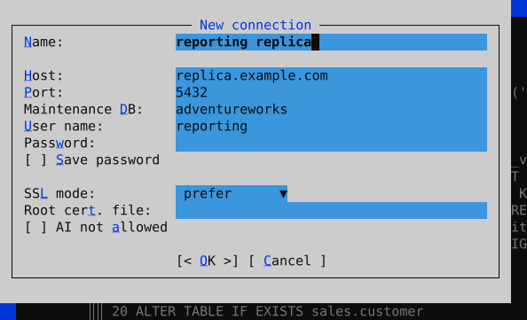
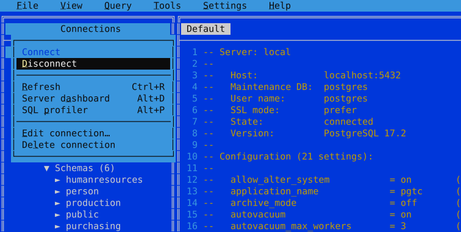
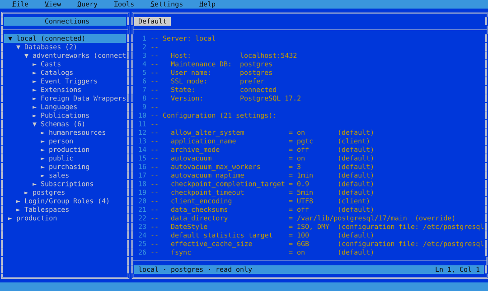

Connections
Saved connections, authentication and .pgpass, TLS, and the sessions pgtc holds on a
server.
Saved connections
The top-level rows of the tree, stored in settings.toml
(Files and folders) without passwords.
adds one; nothing is sent to the server until
.

| Field | Notes |
|---|---|
| Name | Display name only. |
| Host | Host name, address, or the directory of the Unix-domain socket. |
| Maintenance DB | dbname of the server session: cluster-wide catalogs (pg_database, pg_roles, pg_tablespace), pg_settings, the server-wide dashboard and the profiler. |
| User name | The role of every session pgtc opens on this server. |
| Password | Optional. Empty: from .pgpass, or asked for when the server requests one. |
| Save password | Written to .pgpass after the first successful authentication (Passwords). |
| SSL mode, Root cert. file | sslmode, sslrootcert (SSL). |
| AI not allowed | Disables the AI assistant for this server: its schema is never sent to a provider (Privacy). |
Changing or deleting a saved connection

- also works from any row below the server.
- F8 deletes the saved connection after a confirmation. A connected server is
disconnected first. Nothing is executed on the server; a
.pgpassline stays.
Editing a connected server
- Name or AI not allowed only: applied at once; sessions and tabs stay.
- Any connection parameter (also a typed password): the server is disconnected and reconnected, after the prompts of Disconnecting. Every tab of that server is closed. The tree is expanded again to the previously selected object.
- Cancel in a prompt keeps the sessions; the edited parameters stay saved and apply at the next connect.
Connecting
in the server's F2 menu or in .
- pgtc opens one session on the maintenance database and reads
server_version_num. Several servers can be connected at once. - Every session sets
application_name = 'pgtc'. - Authentication:
scram-sha-256,md5,password, and methods without client credentials (trust,peer). No GSSAPI, SSPI or client certificates. - Connect timeout: 10 s by default (Settings) for the TCP connect of each address; TLS handshake and authentication together get twice that, so a host that accepts and then stays silent fails instead of hanging.
- Versions: PostgreSQL 11+; older is refused. Newer than 18 connects with “PostgreSQL N – not yet verified with pgtc” and the catalog queries of the newest known version.
The server row: version and configuration

For a connected server the Default tab lists pg_settings as visible to the role:
- the value with its unit, as
SHOWprints it; source; for configuration file alsosourcefile/sourceline(superusers andpg_read_all_settingsonly);(restart needed)wherepending_restartis true.
Read when the row is first selected and cached until disconnect; Ctrl+R on the server row reads it again.
The login dialog
- Password lookup order: the connection dialog (kept in memory for this run), a connection URI,
PGPASSWORD,.pgpass. The login dialog appears only when none yields a password and the server requests one. - After an authentication failure it reappears with the server's message.
- The password stays in memory until pgtc exits and is reused for every other session on that server.
Passwords: the .pgpass file
Passwords are persisted only in libpq's password file, shared with psql and other libpq clients. No keyring.
| Platform | File |
|---|---|
| Linux, macOS | ~/.pgpass |
| Windows | %APPDATA%\postgresql\pgpass.conf |
| Any | PGPASSFILE, if set. |
- libpq's format and rules:
hostname:port:database:username:password,*wildcards, first match wins,\:and\\escapes; ignored on Linux and macOS unless mode0600or stricter. - The server session is looked up with the maintenance database. That password is reused for all other sessions on the server, so one line is enough; only when no password is known are other sessions looked up with their own database.
- Save password replaces the line with the same host, port, maintenance database and
user, or appends one; other lines and comments are kept. A new file is created with mode
0600.
SSL (TLS)
- SSL mode is libpq's
sslmodewith libpq's semantics:disable,prefer(default),require,verify-ca,verify-full. - Trusted CAs come from the operating system's store. With Root cert. file set,
only the certificates in that PEM file are trusted — and
requirethen checks the chain against it, asverify-cadoes. - Client certificates (
sslcert/sslkey) are not supported.sslmode=allowis read asprefer. - A cancel request goes over its own connection with the same
sslmodeand root certificate.
The sessions pgtc opens on the server
One session per database and per tab, on demand; all with the saved connection's role.
| Session | Database | Opened | Terminated |
|---|---|---|---|
| Server | Maintenance database | ||
| Per database expanded in the tree (tree, definitions, Find object) | That database | Expand | Collapse of the database or the server, |
| Per query tab | The tab's database | Tab opens | Tab closes |
| Per dashboard, profiler, statistics tab | Maintenance database, or the tab's database | Tab opens | Tab closes |
| Short-lived: server-wide Find object, definition export / load, the profiler's execution plan | Each database concerned | For the operation | |
- Transaction state,
SET, temporary tables, prepared statements and advisory locks are private to a query tab; a running statement or a cancel affects that tab only. - Each open tab counts against
max_connectionsandCONNECTION LIMIT. - Closing a session: a cancel request if a statement is running, then the protocol's Terminate message; dropped after 3 s without an answer. No unexpected EOF on client connection in the server log.
Disconnecting
terminates every session on that server and closes its tabs. First, as on quit:
- per query tab with unsaved text: Save them? (can be turned off in Settings);
- with a session in a transaction block: Commit all / Rollback all / Cancel.
Cancel aborts the disconnect.
A lost session is reported in the status line. Losing the server session collapses the server's row; a query tab keeps its text.
Connecting from the command line
pgtc -h db.example.com -p 5432 -U app adventureworks
pgtc postgresql://app@db.example.com/adventureworks?sslmode=verify-full- Adds a saved connection — unless one with the same host, port, database, user and
sslmodeexists — and connects. Options andPG*variables: Reference → Command line. -Wforces the password prompt;-wnever prompts.- A password from a URI or
PGPASSWORDis never written to disk.